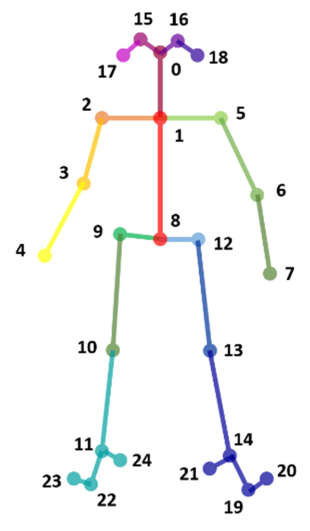
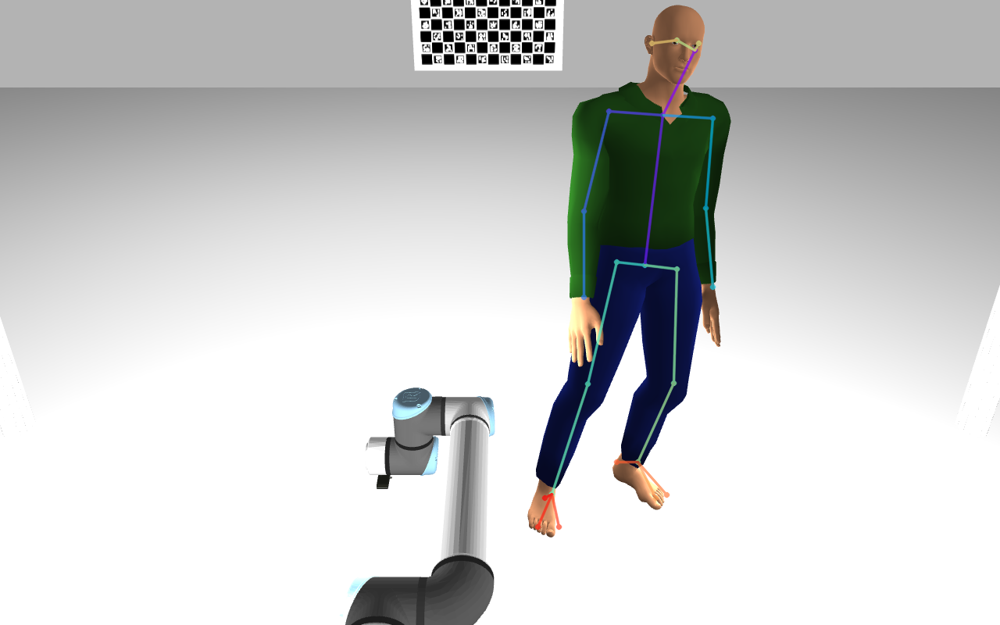

Optimization of 3D human skeletons using multi-view 2D skeletons
Part one: Fixing bugs on triangulation algorithm and adding more debug visualizations
Since last month some bugs on the triangulation algorithm were fixed, for example, images were not synchronized between cameras at all times which was causing triangulation between different sets of images. Also, the visualization now includes the RGB image with the overlapped 2D skeleton that allows to confirm that the shoulders are inded being well detected by OpenPose.
Part two: Developing an optimization algorithm to determine the 3D pose of a human
As discussed in the last meeting, an idea came to my mind about using optimization to calculate the correct position of the 3D skeleton using a multi-camera setup. In an initial brainstorm, the conclusion was that the optimization should consider two things: the projection of the 3D point in the current iteration to each of the cameras of the system and the size of each link in the human skeleton. Using the following image as an example, we know that the arm, that is the link between the joints 2 and 3, can't be 2 meters long. So, we must define limits for the size of each link, to also restrict the pose of the 3D skeleton at that moment. At this moment, this last step is still not implemented.
As an additional step, we can also consider the n last frames (being n a number to define in the future) as a parameter that influences the optimization at that moment. That can be achieved by either considering, for each timestamp, the optimization of both the current timestamp and the last n timestamps, or by simply restricting the optimization of the current timestamp with the pose obtained in the last time stamp (which might be more efficient for real time).
You can check the code for further details here
Part three: Testing with data from larcc
Optimization with one camera
I started testing with the already recoded bagfiles from larcc. The results for the optimzation process using only one frame and one camera were as expected, as shown in the following video.
Optimization with two cameras
When adding the second camera as a part of the optimization process itself, the algorithm should return a set of X,Y,Z points (one for each keypoint) that matches the projections for both the cameras. The results were not correct like when optimizing just one camera, but it was not possible to confirm if the source of the problem was the algorithm or the data itself. There were several possible sources of error within the data like a bad intrinsic or extrinsic calibration. The extrinsic calibration data is a few months old and might now be entirely correct. Also, the error can come from the 2D detections. To eliminate these uncertainties, the methodology was tested with simulated data, which allows us to be sure of the extrinsic and intrinsic parameters. Results are demonstrated in the following section.
Part four: Testing with simulated data
The simulated data was obtained with a simulated human in Gazebo (code provided by Manuel Gomes). First, I tested to see if OpenPose would be able to detect simulated humans as well, which it does, as shown in the following image.
The calibration with a single camera also works as expected. So I first recorded a new bagfile with a non-moving simulated human to ensure that possible unsynchronization wouldn't affect the results. The following video shows the obtained optimization with 2 cameras, which works as expected, as showed in the following video.
I also tested with four cameras at the same time, and it also worked as expected, which proves that the algorithm is well-designed.
EDIT: 3D visualization
On-going tasks
- Adding the 3D visualization in the optimization algorithm (concluded in the meantime)
- Adding the link length restrictions to optimization
- Adding the time component to optimization
- Discuss the possibility of describing the skeleton with Denavit–Hartenberg parameters